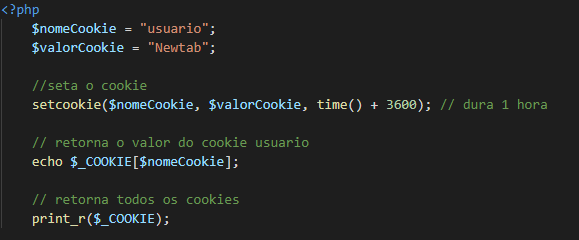
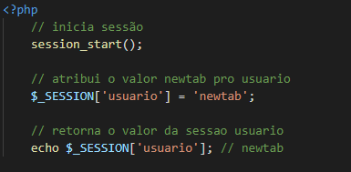

Cookies servem para armazenar dados no navegador do usuário a fim de identificar seus acessos e retornos. Um exemplo prático de uso é sua aplicação em autenticações por meio de token: ao logar no site, o valor do token fica gravado no seu navegador para que o servidor identifique qual usuário está fazendo as requisições.
Armazena dados do acesso de um único usuário e permanecem disponíveis em todas as páginas da aplicação, caso seja necessário seu uso. Nos permite controlar permissões de acesso, verificar se o usuário está logado, mostrar itens no carrinho de compras e até preferência de cores.
